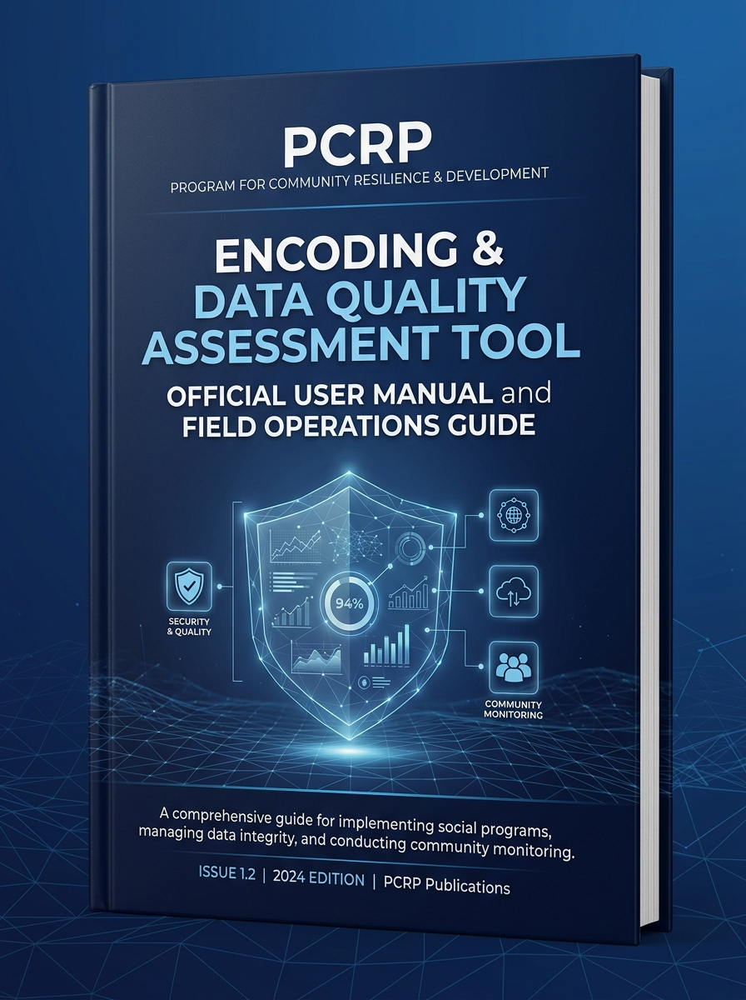
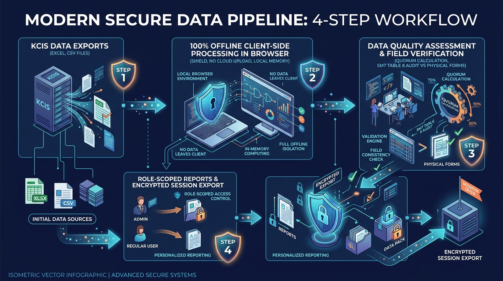
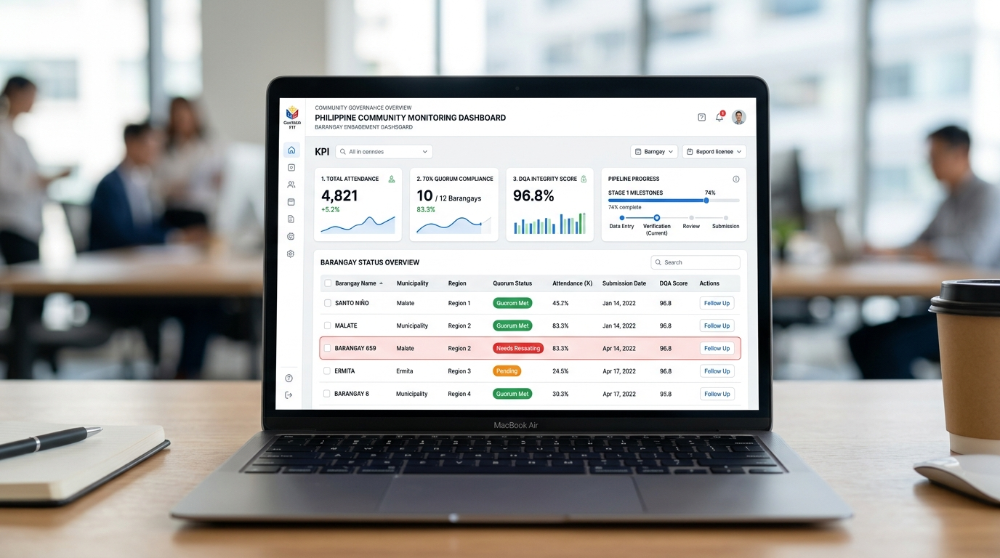
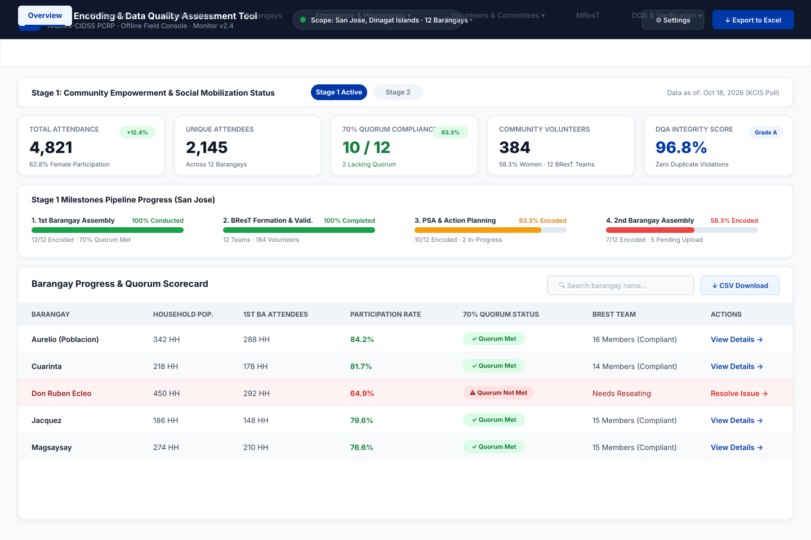

PCRP Encoding & Data Quality Assessment Tool
The complete field operations manual for Project Evaluation Assistants (PEA), Municipal Data Monitors (MDM), and Area Coordinating Teams (ACT) across KALAHI-CIDSS PCRP municipalities.
1 Executive Overview & Field Purpose
The PCRP Encoding and Data Quality Assessment Tool (Monitor Desktop v2.4) is an offline-first analytical console designed to support field monitoring teams. It provides instantaneous validation of raw KALAHI-CIDSS Comprehensive Information System (KCIS) data against the official Social Mobilization Sub-Manual (SM1) and Monitoring & Evaluation Sub-Manual (SM7).
Calculates strict 70% household quorum compliance for barangay assemblies automatically.
Generates random 10% sampling to reconcile digital records against physical paper attendance sheets.
Strictly limits PEA/MDM field staff to their assigned LGU, preventing unauthorized cross-municipality leaks.
2 100% Offline Architecture & Data Privacy
Because field operations frequently operate in isolated, zero-connectivity island or mountain barangays, the application runs 100% within your local browser memory.

Raw KCIS files contain names, birthdates, and household demographics. The tool processes files exclusively in memory. No network requests are sent, and no data is transmitted to cloud servers.
3 User Roles & Geographic Scope Isolation
The system enforces strict access control through two dedicated workspace personas:
| Feature / Capability | PEA / MDM (Municipal Field Workspace) | Regional RPMO (Executive Oversight) |
|---|---|---|
| Geographic Scope | Locked strictly to 1 assigned Municipality | Full access across all 26 LGUs & 516 Barangays |
| Municipalities Tab | Hidden (to prevent data spillover) | Visible with multi-LGU comparison matrix |
| Barangay Views | Shows only barangays belonging to user's LGU | Multi-LGU filterable table with provincial chips |
| Excel Export | Clean, single-municipality workbook | Comprehensive regional consolidation workbook |
4 Getting Started & System Launch
Getting started requires zero software installation or administrator rights:
Open dist/PCRP Encoding and Data Quality Assessment Tool.html on your laptop.
Double-click to open in Microsoft Edge or Google Chrome (works completely offline).
Choose PEA/MDM and your designated LGU name to initialize data isolation.
5 KCIS Data Export & Ingestion Guide
The tool accepts official exports directly from the KCIS Web Portal. Do not alter column headers in Excel before loading.

- Participants Export (.xlsx / .csv): Contains attendance logs, sex, birthdate, and conduct dates.
- Household Roster / K2 (.xlsx / .csv): Masterlist of household heads and target counts.
- Community Volunteer List (.xlsx / .csv): Committee rosters (BResT, PIT, PT, CMSC, SFMSC).
6 Executive Overview Dashboard
Upon clicking "Show Findings", the dashboard displays instant analytical findings for your LGU.


7 70% Quorum & Household Participation Scorecard
Under KALAHI-CIDSS SM1, a Barangay Assembly is valid only if at least 70% of registered households attend.
Barangays with rates ≥ 70% display ✓ Quorum Met. Barangays falling below 70% display ⚠ Quorum Not Met, indicating that an ACT/MCT reseating assembly is required before sub-project proposals can be endorsed.
8 Community Volunteer & BResT/MResT Governance
Community resilience committees must adhere to statutory composition rules:
At least 30% of members must represent Women, Senior Citizens, IPs, PWDs, 4Ps, or Youth.
A minimum of 50% women representation across all volunteer committees.
Validates presence of a signed Mayoral Executive Order organizing the Municipal Resilience Team.
9 SM7 Table 8 Field Verification Engine
Digital records must be validated against physical paper records in the municipal archive.

Click "Generate Random 10% Sample" to produce an unbiased audit selection.
Compare name, birthdate, and signature against physical Form 1 / K2 sheet.
Mark as VERIFIED or DISCREPANCY.
10 Data Health & 7-Day Encoding Rule
The health engine evaluates 4 dimensions:
- Completeness (98%+ Target): Flags missing mandatory values.
- Timeliness (7-Day Rule): Records must be encoded into KCIS within 7 days of field activity.
- Validity: Detects impossible birthdates, future dates, and sequence anomalies.
- Integrity: Detects duplicate entries and ghost attendance records.
11 Session Management & Excel Reports
Exports an encrypted snapshot file to transfer your work or back it up.
Updates KCIS rows without losing your manually tagged field verification audits.
Generates a clean, scoped Excel workbook ready for LGU and RPMO presentation.
12 FAQ & Troubleshooting
Navigate to Settings and click the red button: "Forget Saved Data". This immediately purges all encrypted local storage, participant names, and audit tags from that browser.